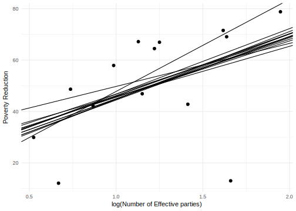
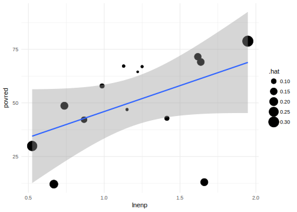
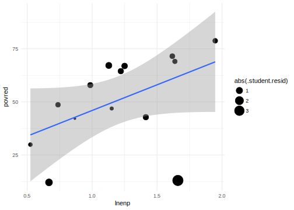
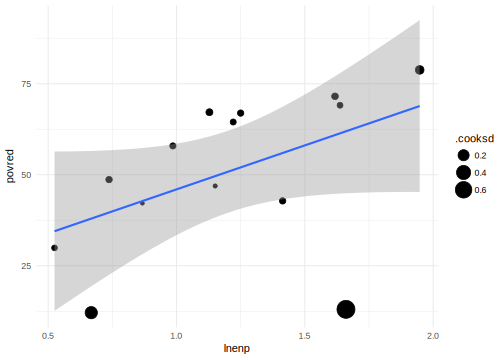
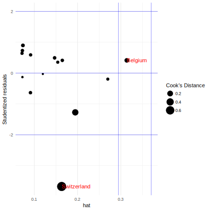
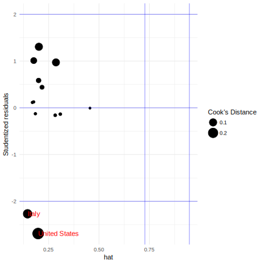

Chapter 9 Outliers
This has absolutely nothing to do with the Malcolm Gladwell book.
- An outlier is an observation which has large regression errors \(\hat{\epsilon}^2\).
- It is distant from the other observations on the \(y\) dimension.
- It increases standard errors by increasing \(\hat{\sigma}^2\), but does not bias \(\beta\) if it is has typical values of \(x\)
There are two types of extreme values in a regression.
- Leverage point: extreme in the \(x\) direction
- Outlier : extreme in the \(y\) direction. The point has a large error (the regression line does not fit the point well)
For a point to affect the results of a regression (influential) it must be both a high levarage point and an outlier.
The points that are influential follows from the same calculations that were in the discussion of how the linear regression is a weighted averge of points.
What does this mean?
- Are the outliers bad data?
- Are the data truly contaminated, meaning that they come from a different distribution. This means that you are fitting the wrong model to the DGP causing inefficiency and maybe bias.
Hat matrix
The hat matrix is named as such because it puts the “hat” on \(Y\),
The hat matrix \[ \mat{H} = \mat{X} (\mat{X}\T \mat{X})^{-1} \mat{X}\T \]
\[ \begin{aligned}[t] \hat{\vec{\epsilon}} &= \vec{y} - \mat{X} \hat{\vec{\beta}} \\ &= \vec{y} - \mat{X} (\mat{X}\T \mat{X})^{-1} \mat{X} \vec{y} \\ &= \vec{y} - \mat{H} \vec{y} \\ &= (\mat{I} - \mat{H}) \vec{y} \end{aligned} \]
\[ \hat{\vec{y}} = \mat{H} \vec{y} \]
Some notes:
- \(\mat{H}\) is a \(n \times n\) symmetric matrix
- \(\mat{H}\) is idempotent: \(\mat{H} \mat{H} = \mat{H}\)
Since \[ \hat{\vec{y}} = \mat{X} \widehat{\vec{\beta}} = \mat{X} (\mat{X}\T \mat{X})^{-1} \mat{X}\T \vec{y} = \mat{H} \vec{y}, \] for a particular observation \(i\), \[ \hat{y}_i = \sum_{j = 1}^n h_{ij} y_j. \] The equation above means that predicted value of every observation is a weighted value of the outcomes of other observations.
The hat values \(h_i = h_ij\) are diagonal entries in the hat matrix.
For a bivariate linear regresion, \[ h_i = \frac{1}{n} + \frac{(x_i - \bar{x})^2}{\sum_{j = 1}^n (x_j - \bar{x})^2}, \] meaning
- hat values are always at least \(1 / n\)
- hat values are a function of how far \(i\) is from the center of \(\mat{X}\) distribution
Rule of thumb: examine hat values greater than \(2 (k + 1) / n\).
This example will use the following
library("MASS")
library("dplyr")
library("tidyr")
library("broom")
library("boot")
library("ggplot2")This ensures that we always use the select function from dplyr rather than the one from MASS.
select <- dplyr::selectFor the ggplot2 plots, we will the default theme settings here, so that we can reuse them for all plots, and also, if we feel like changing them, we only need to change them in one location.
theme_local <- theme_minimal9.1 Iver and Soskice Data
This is an example of from Iversen and Soskice (2003). That paper is interested in the relationship between party systems and redistributive efforts of the government.
The party system is measured using the effective number of parties; the redistributive efforts of the government is measured as the percent people lifted from poverty by taxes and transfers
First, let’s load the data
iver <- read.csv("http://uw-pols503.github.io/2015/data/iver.csv")
glimpse(iver)## Observations: 14
## Variables: 8
## $ cty <fctr> Australia, Belgium, Canada, Denmark, Finland, France...
## $ elec_sys <fctr> maj, pr, maj, pr, pr, maj, maj, pr, pr, pr, pr, unam...
## $ povred <dbl> 42.16, 78.79, 29.90, 71.54, 69.08, 57.91, 46.90, 42.8...
## $ enp <dbl> 2.38, 7.01, 1.69, 5.04, 5.14, 2.68, 3.16, 4.11, 3.49,...
## $ lnenp <dbl> 0.867100, 1.947340, 0.524729, 1.617410, 1.637050, 0.9...
## $ maj <int> 1, 0, 1, 0, 0, 1, 1, 0, 0, 0, 0, 0, 1, 1
## $ pr <int> 0, 1, 0, 1, 1, 0, 0, 1, 1, 1, 1, 0, 0, 0
## $ unam <int> 0, 0, 0, 0, 0, 0, 0, 0, 0, 0, 0, 1, 0, 0The variables of interest are lnemp (log effective number of parties), and povred (poverty reduction). Let’s plot the relationship between them
ggplot(iver, aes(x = lnenp, y = povred)) +
geom_point() +
geom_smooth(method = "lm") +
xlab("log(Number of Effective parties)") +
ylab("Poverty Reduction") +
theme_local()
9.2 Influential Observations
What are influential points in a regression? They are points that How much would the regression line change if we deleted a the point and reran the regression?
iver_mod1 <- lm(povred ~ lnenp, data = iver)
iver_loo_regs <-
# Start with the iver data
iver %>%
# Group by country
group_by(cty) %>%
# For each country
# Run the regression without that country and store the coefficient values
do({
tidy(lm(povred ~ lnenp, data = filter(iver, cty != .$cty))) %>%
select(term, estimate)
}) %>%
# Reshape the dataset so that each coefficient is in a column
spread(term, estimate) %>%
# Calculate how much these slopes differ from the one with all the data
mutate(diff_slope = lnenp - coef(iver_mod1)["lnenp"],
abs_diff_slope = abs(diff_slope)) %>%
# Sort by the difference in slopes
arrange(- abs_diff_slope)
iver_loo_regs## Source: local data frame [14 x 5]
## Groups: cty [14]
##
## cty `(Intercept)` lnenp diff_slope abs_diff_slope
## <fctr> <dbl> <dbl> <dbl> <dbl>
## 1 Switzerland 11.96341 35.84168 11.67038124 11.67038124
## 2 United States 33.00804 16.74422 -7.42708138 7.42708138
## 3 Belgium 26.39803 19.48071 -4.69058913 4.69058913
## 4 Denmark 23.62155 21.91104 -2.26025292 2.26025292
## 5 United Kingdom 18.40976 26.35067 2.17937476 2.17937476
## 6 Canada 24.46021 22.32840 -1.84289747 1.84289747
## 7 Finland 23.22400 22.44224 -1.72905264 1.72905264
## 8 Italy 21.22614 25.50988 1.33858580 1.33858580
## 9 France 19.31982 25.43240 1.26110272 1.26110272
## 10 Norway 19.66602 24.78567 0.61437307 0.61437307
## 11 Netherlands 21.06469 23.82630 -0.34499536 0.34499536
## 12 Sweden 20.93623 24.04618 -0.12511217 0.12511217
## 13 Australia 21.96619 24.07283 -0.09847140 0.09847140
## 14 Germany 22.08429 24.10787 -0.06343038 0.06343038Switzerland looks particularly problematic. The effect of lnenp on povred is 7.
We could also plot these lines against the original data, to get a more intuitive sense of how much dropping one observation affects the regression slopes.
ggplot() +
geom_abline(data = iver_loo_regs, aes(intercept = `(Intercept)`,
slope = lnenp)) +
geom_point(data = iver, aes(x = lnenp, y = povred)) +
xlab("log(Number of Effective parties)") +
ylab("Poverty Reduction") +
theme_local()
Conveniently, in linear regression we can find which observations will have the largest influence on regression lines without rerunning the regression. Three statistics are of interest:
- Cook’s distance: a single number that summarizes how much dropping an observation changes all the regression coefficients.
- Studentized residual: The scaled residual of the observation.
- Hat score: How far the observation is from the center of the data.
Use the broom function augment to add residuals and other diagnostic data to the original regression data. See help(influence) for functions to get these diagnostics using base R.
iver_mod1_aug <- augment(iver_mod1) %>%
mutate(cty = iver$cty)
glimpse(iver_mod1_aug)## Observations: 14
## Variables: 10
## $ povred <dbl> 42.16, 78.79, 29.90, 71.54, 69.08, 57.91, 46.90, 42...
## $ lnenp <dbl> 0.867100, 1.947340, 0.524729, 1.617410, 1.637050, 0...
## $ .fitted <dbl> 42.75835, 68.86916, 34.48280, 60.89432, 61.36904, 4...
## $ .se.fit <dbl> 6.692466, 10.833460, 10.047244, 7.413818, 7.595310,...
## $ .resid <dbl> -0.5983544, 9.9208441, -4.5828034, 10.6456800, 7.71...
## $ .hat <dbl> 0.11973167, 0.31374085, 0.26985506, 0.14693340, 0.1...
## $ .sigma <dbl> 20.20023, 19.87581, 20.13632, 19.89997, 20.04234, 1...
## $ .cooksd <dbl> 7.394393e-05, 8.763926e-02, 1.420959e-02, 3.058498e...
## $ .std.resid <dbl> -0.03297382, 0.61918852, -0.27729691, 0.59593691, 0...
## $ cty <fctr> Australia, Belgium, Canada, Denmark, Finland, Fran...Oddly, augment calculates the standardized residual, \[
\mathtt{.std.resid} = E'_i = \frac{E_i}{S_E \sqrt{1 - h_i}}
\] which divides by the regression residual standard error, which is itself a function of the residual of \(i\), \(S_E = \sqrt{\frac{\sum_j E_j}{n - k - 1}}\). What we want is the studentized residual which divides by the standard error of the regression calculated omitting observation \(i\): \[
\mathtt{.resid / .sigma * sqrt(1 - .hat)} = E^*_i = \frac{E_i}{S_{E_{(i)}} \sqrt{1 - h_i}}
\] where \(S_{E_(i)}\) is the standard error of the regression run without observation \(i\). It is called the Studentized residual, because it is distributed Student’s \(t\); the standardized residual is not. Add a new variable called .student.resid, which we can calculate using the residual (.resid), standard error of the regression that omits that observation (.sigma), and the hat value (.hat):
iver_mod1_aug <-
iver_mod1_aug %>%
mutate(.student.resid = .resid / .sigma * sqrt(1 - .hat))In base R, the function rstudent calculates the Studentized residuals, and rstandard calculates the standardized residuals:
setNames(rstudent(iver_mod1), iver$cty)## Australia Belgium Canada Denmark Finland
## -0.03157146 0.60253131 -0.26634629 0.57920127 0.41834057
## France Germany Italy Netherlands Norway
## 0.64999275 -0.13942917 -0.69795162 0.78818851 0.97001936
## Sweden Switzerland United Kingdom United States
## 0.69123825 -4.39123120 0.49519482 -1.57878326setNames(rstandard(iver_mod1), iver$cty)## Australia Belgium Canada Denmark Finland
## -0.03297382 0.61918852 -0.27729691 0.59593691 0.43350755
## France Germany Italy Netherlands Norway
## 0.66622163 -0.14550050 -0.71336214 0.80092982 0.97241536
## Sweden Switzerland United Kingdom United States
## 0.70678751 -2.76425506 0.51154375 -1.48890165This scatterplot weights observations by their hat score. Points further from the mean of lnenp have higher hat scores.
ggplot(data = iver_mod1_aug, aes(x = lnenp, y = povred)) +
geom_point(mapping = aes(size = .hat)) +
geom_smooth(method = "lm") +
theme_local()
This scatterplot weights observations by their absolute Studentized residuals. Those observations furthest from the regression line and high hat values, have the highest residuals.
ggplot(data = iver_mod1_aug, aes(x = lnenp, y = povred)) +
geom_point(mapping = aes(size = abs(.student.resid))) +
geom_smooth(method = "lm") +
theme_local() Cook’s distance is a measure of the overall influence of points on the regression; the point’s effect on all the parameters. This plot weights points by their Cook’s distance. We can see that the two points on the bottom (Switzerland and the US) have the highest Cook’s distance.
ggplot(data = iver_mod1_aug, aes(x = lnenp, y = povred)) +
geom_point(mapping = aes(size = .cooksd)) +
geom_smooth(method = "lm") +
theme_local()
A standard plot to assess outliers is the Influence Plot. The x-axis is hat scores, the y-axis is Studentized residuals. The points are sized by Cook’s Distance. Rules of thumb lines are drawn at -2 and 2 for Studentized residuals, and \(\bar{h} + 2 sd(h)\) and \(\bar{h} + 3 sd(h)\) for hat scores.
ggplot() +
geom_point(data = iver_mod1_aug,
mapping = aes(x = .hat, y = .student.resid, size = .cooksd)) +
# add labels to points, but only those points that are flagged as outliers
# for at least one of the diagnostics considered here
geom_text(data =
filter(iver_mod1_aug,
.cooksd > 4 / iver_mod1$df.residual
| abs(.student.resid) > 2
| .hat > mean(.hat) + 2 * sd(.hat)),
mapping = aes(x = .hat, y = .student.resid, label = cty),
hjust = 0, size = 4, colour = "red") +
geom_hline(data = data.frame(yintercept = c(-2, 0, 2)),
mapping = aes(yintercept = yintercept),
colour = "blue", alpha = 0.4) +
geom_vline(data = data.frame(xintercept = mean(iver_mod1_aug$.hat) +
sd(iver_mod1_aug$.hat) * c(2, 3)),
mapping = aes(xintercept = xintercept),
colour = "blue", alpha = 0.4) +
xlab("hat") +
ylab("Studentized residuals") +
scale_size_continuous("Cook's Distance") +
theme_local()
Instead of a plot, we could find the id Observations with high Cook’s distance (greater than \(4 / (n - k - 1)\)):
filter(iver_mod1_aug, .cooksd > (4 / iver_mod1$df.residual)) %>%
select(cty, .cooksd, lnenp)## cty .cooksd lnenp
## 1 Switzerland 0.745124 1.66013Observations with high hat scores (greater than 2 standard deviations than the mean hat score):
filter(iver_mod1_aug, .hat > mean(.hat) + 2 * sd(.hat)) %>%
select(cty, .hat, lnenp)## cty .hat lnenp
## 1 Belgium 0.3137408 1.94734Observations with high Studentized residuals (+/- 2):
filter(iver_mod1_aug, abs(.student.resid) > 2) %>%
select(cty, .student.resid, lnenp)## cty .student.resid lnenp
## 1 Switzerland -3.674577 1.66013Or combine these,
filter(iver_mod1_aug,
abs(.student.resid) > 2 |
.hat > mean(.hat) + 2 * sd(.hat) |
.cooksd > 4 / iver_mod1$df.residual) %>%
select(cty, .cooksd, .hat, .student.resid, lnenp)## cty .cooksd .hat .student.resid lnenp
## 1 Belgium 0.08763926 0.3137408 0.4134926 1.94734
## 2 Switzerland 0.74512398 0.1632012 -3.6745770 1.66013Also see influencePlot in car, and influencePlot in simcf for other implementations of this plot type. One feature of those implementations is that they allow for the ability to identify the points on the plot.
Now that we’ve identified Switzerland as a problematic point, the question is what to do about it. Checking the Switzerland data, it appears that it is correct and is not the result of data entry issues. In general, we should avoid dropping points. Perhaps the issue is that we have not accounted for different electoral systems. Let’s try including
iver_mod2 <- lm(povred ~ lnenp + elec_sys, data = iver)
iver_mod2##
## Call:
## lm(formula = povred ~ lnenp + elec_sys, data = iver)
##
## Coefficients:
## (Intercept) lnenp elec_syspr elec_sysunam
## 17.658 26.693 9.221 -48.952iver_mod2_aug <- augment(iver_mod2) %>%
mutate(.student.resid = .resid / (.sigma * sqrt(1 - .hat)),
cty = iver$cty)However, by including a categorical variable for electoral system in which Switzerland is the only country with a unanamity government, we are effectively dropping Switzerland from the regression. This means that we cannot calculate Cook’s distance or studentized residuals, or hat scores for Switzerland since a regression estimated without switzerland cannot estimate a coefficient for the unam category, since Switzerland is the only member of that category.
filter(iver_mod2_aug,
abs(.student.resid) > 2 |
.hat > mean(.hat) + 2 * sd(.hat) |
.cooksd > 4 / iver_mod1$df.residual) %>%
select(cty, .cooksd, .hat, .student.resid, lnenp)## cty .cooksd .hat .student.resid lnenp
## 1 Italy 0.1548996 0.1455977 -2.267585 1.413420
## 2 Switzerland NaN 1.0000000 -Inf 1.660130
## 3 United States 0.2749067 0.1978831 -2.690288 0.667829But now that we’ve ignored Switzerland, both Italy and the United States seem to be influential. This is because now that there are fewer observations per group, in some sense it is easier for observations to be influentia. But, although the US and Italy have high studentized residuals, neither of them exceed the rule of thumb for Cooks distance.
filter(iver_mod2_aug,
.cooksd > 4 / iver_mod1$df.residual) %>%
select(cty, .cooksd, .hat, .student.resid, lnenp)## [1] cty .cooksd .hat .student.resid
## [5] lnenp
## <0 rows> (or 0-length row.names)ggplot() +
geom_point(data = filter(iver_mod2_aug, .cooksd < Inf),
mapping = aes(x = .hat, y = .student.resid, size = .cooksd)) +
# add labels to points, but only those points that are flagged as outliers
# for at least one of the diagnostics considered here
geom_text(data =
filter(iver_mod2_aug,
.cooksd > 4 / iver_mod2$df.residual
| abs(.student.resid) > 2
| .hat > mean(.hat) + 2 * sd(.hat),
.cooksd < Inf),
mapping = aes(x = .hat, y = .student.resid, label = cty),
hjust = 0, size = 4, colour = "red") +
geom_hline(data = data.frame(yintercept = c(-2, 0, 2)),
mapping = aes(yintercept = yintercept),
colour = "blue", alpha = 0.4) +
geom_vline(data = data.frame(xintercept = mean(iver_mod2_aug$.hat) +
sd(iver_mod2_aug$.hat) * c(2, 3)),
mapping = aes(xintercept = xintercept),
colour = "blue", alpha = 0.4) +
xlab("hat") +
ylab("Studentized residuals") +
scale_size_continuous("Cook's Distance") +
theme_local()
Although there are still a few observations with large residuals, and with a small dataset, it is almost inevitable that some observations will have outsized influence on the results, from an outlier perspective the new model seems less problematic. However, we accomplished this at the cost of effectively ignoring Switzerland. The model is able to estimate how different Switzerland is from what would be predicted, but by including a dummy variable that is only 1 for Switzerland, we are treating Switzerland as sui generis. Also note, that although the category is called unam, it would be inappropriate to interpret it as the effect of that type of government since Switzerland is the only country in that category. We cannot separate the effect of the government type from all the other things that make Switzerland unique. It would be more appropriate to call it the “Switzerland” category in this instance.